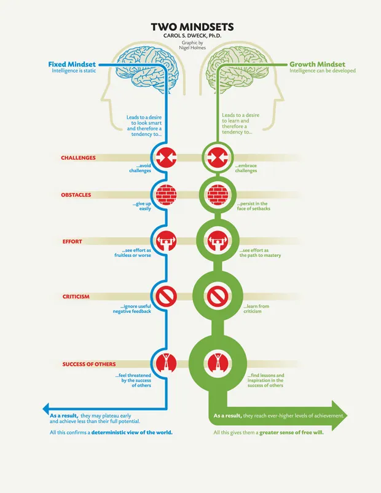

Manifest your reality!
I know those words may compel you to roll your eyes or start to build a picture of what type of person I am. This phrase in the popularised, commodified version of spirituality we see now on social media has a bit of stigma attached to it.
But hear me out when I propose that it’s just a different version of what’s also known as neuroplasticity.
One of the ways we interpret the world is through science, and scientific study of the brain has shown that which our brain is capable of is not fixed, but that it has massive ability to change, develop and adapt.
By understanding that we don’t just have a mechanical brake in our biology that stops learning after we enter adulthood, it opens up a crazy amount of possibility and hope for us. We can approach things that we want to learn, ideas that we want to adopt, behaviours that we want to change with intention and optimism.
Of the 10 principles of neuroplasticity, here are a few of the specific principles that will be helpful for me and why...
Growth mindset is a concept that was researched by Carol Dweck, an American psychologist.
I first came across her work when I was studying to become a teacher. Understanding growth mindset and how to nurture this in kids is super important.
What was equally important for us as trainee teachers was to also understand the value in viewing the kids that we taught as having the ability to change and grow their potential as opposed to their “talent”, achievement and engagement being a fixed thing.
This would prevent us from acting with bias in the classroom, and doing the thing that we had seen many of our own teachers do when we had gone through high school - which was to write certain students off. It was often clear who were the favourites, who the faculty saw as having the most potential and where their time, energy and encouragement went to.
After I left teaching, I again came across the term of growth mindset vs fixed mindset - this time in the corporate world.
As an employee of a large bank and business, there were many frameworks for making sure you developed yourself and if you were in a leadership position, that you used to develop your team.
Coaching sessions or meetings were often guided by the principles of growth mindset and fixed mindset. If you wanted staff to perform better, return better numbers, efficiency and be well-oiled robots, it was important to encourage them in a way that talked about development in a human way.
It was an interesting way to engage with work and was good to have some human element however reflecting back, these concepts don’t land the same when the motive behind introducing them to staff is primarily for the profit of the company, rather than the good of the person. I’m not saying that these teachings shouldn’t ever be introduced in a company but by accompanying them with a culture that genuinely cares about the welfare of the individual and the collective, it would be so much more effective.
I’d like to say in my learning journey, through my life, as well as with Dev Academy that I have long abandoned my fixed mindset but what a self-made trap that would be! I do tend to be a very curious person, that is always eager to learn from my lessons, but it’d be foolish to think that I always operate with a growth mindset.
There will always be situations or thoughts that trigger fear, so being careful to check myself and check in with myself is important - how am I reacting to this feedback? Am I feeling threatened by seeing someone else’s awesome blog?
I think especially the last second point is something that I will tackle a lot in this course, as I see so many people that are really skilled at coding, have experience, or adeptness at learning the material. It can be easy to see the success of others in this area, and cut myself short because of the comparison. However by applying a growth mindset, I know I can see those examples and be excited at their creativity and potential, and then in turn my own creativity and potential.
